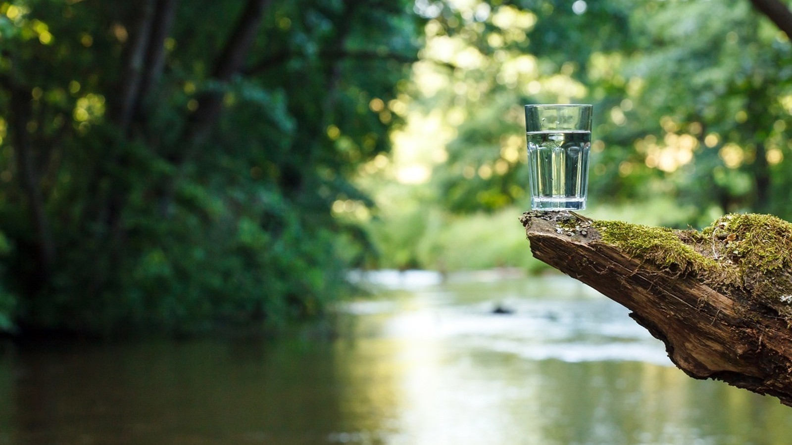

kebaikan Air, Hidup Sehat | 06 November 2021
Menjaga tubuh dengan asupan air mineral yang baik merupakan salah satu langkah penting untuk menghasilkan gaya hidup sehat. Meski demikian, tidak jarang ditemukan minimnya kesadaran banyak orang akan manfaat konsumsi air mineral.
Air mineral sendiri sangat penting untuk menjaga kesehatan, apalagi dalam menjalankan aktivitas sehari-hari. Setiap kandungan air mineral terdapat banyak zat yang bermanfaat dan dibutuhkan oleh tubuh. Selain dari kandungannya, tubuh sendiri membutuhkan setidaknya 2 liter air atau kurang lebih 8 gelas untuk rata-rata orang dewasa dalam sehari [2]. Jumlah ini tentunya bisa dipengaruhi oleh beberapa faktor, seperti usia, jenis kelamin, dan aktivitas harian yang dilakukan.
Air mineral sendiri memiliki beberapa syarat utama agar dinyatakan sehat dan dapat dikonsumsi seperti tidak berwarna, tidak berbau, tidak memiliki rasa, dan tidak mengandung mikroorganisme. Tentu sulit untuk membuktikan hal tersebut, apalagi bagi orang awam.
Oleh karena itu, pilih air minum berkualitas seperti AQUA yang telah membantu hidrasi masyarakat indonesia lebih dari 48 tahun. Semua langkah dan produksi AQUA juga menggunakan beberapa prosedur yang diawasi dengan sangat ketat. Melalui 3 perlindungan AQUA, diharapkan semua pihak mengalami manfaat dari air mineral pegunungan yang menjadi sumber mata air [1].
Dengan pembentukan 3 perlindungan AQUA, semua pihak merasakan manfaat kebersihan air dari masyarakat sekitar, pertanian ramah lingkungan, pengelolaan air limbah, hingga upaya menjaga kebersihan sumber daya air di daerah aliran sungai.
Saat ini, AQUA memiliki 21 sumber air pegunungan yang tersebar di seluruh Indonesia. AQUA selalu berupaya untuk melindungi sumber mata airnya, salah satunya melalui program AQUA Lestari [2].
AQUA Lestari merupakan inisiatif berkelanjutan dari AQUA untuk menghadapi tantangan bisnis yang semakin menguat akibat pengurangan kualitas serta kuantitas sumber daya alam, pertambahan penduduk, serta harapan pemangku kepentingan. Upaya itu diwujudkan dalam empat kegiatan yang menjadi pilar program.
Cara menjaga kelestarian air yang lain dilakukan AQUA dengan melakukan efisiensi air dalam produksi. AQUA sangat menghemat penggunaan air, bahkan mendaur ulang air sisa produksi untuk keperluan domestik, sehingga mengurangi jumlah air yang terbuang.
Agar semakin menghemat air, AQUA terus meningkatkan target Total Water Utilization (TWU) per tahun. Perlu diketahui, TWU merupakan rasio yang menggambarkan perbandingan air yang digunakan untuk memproduksi 1 liter produk [2].
Pada tahun 2015, TWU yang diraih AQUA sebesar 1,19. Namun, pada 2020, diturunkan menjadi 1,16 sehingga penghematan air akan semakin meningkat [3].
Dalam menjaga kandungan mineral alami, AQUA melibatkan berbagai pihak untuk melakukan pengecekan secara berkala mengenai kandungan sumber air. Jadi semua air mineral yang dikonsumsi dari AQUA sudah melalui berbagai proses penting.
Para ahli hidrologi dan hidrogeologi membawa peran utama dalam melindungi kandungan mineral alami yang didapat langsung dari air pegunungan. Kandungan mineral dalam satu produk AQUA sendiri meliputi kalsium, sodium, magnesium, kalium, dan bikarbonat [2].
Seluruh proses produksi yang dilakukan AQUA dalam proses penelitian, pengemasan, distribusi, hingga sampai ke tangan konsumen selalu melalui prosedur yang ketat. Semua proses melewati serangkaian tahapan pengecekkan, pembersihan, dan pengemasan, yang dilakukan tanpa tersentuh tangan manusia.
Selain itu, air pegunungan AQUA sendiri sudah disaring dan dimurnikan secara alami dari bebatuan alam dan dicek kembali oleh para ahli. Proses ini dilakukan untuk memudahkan para konsumen dalam memilih air tanpa harus khawatir terhadap kandungannya.
AQUA hadir dalam kemasan botol plastik 220 ml, 330 ml, 600 ml, dan 750 ml yang cocok untuk menemani Anda ketika beraktivitas diluar seperti olahraga ataupun kumpul dengan teman. Lalu ada kemasan 1500 ml yang cocok travelling atau semacamnya. Untuk keluarga dirumah, kemasan galon 19 liter siap mencukupi kebutuhan hidrasi keluarga.
Manfaat yang didapatkan dari setiap tetes air AQUA sendiri diharapkan mampu menjaga seluruh keluarga di Indonesia agar tetap sehat tanpa adanya gejala dehidrasi [4].
Sangat penting untuk memilih air mineral yang baik bagi tubuh, karena kandungan air yang buruk justru dapat menyebabkan penyakit.
Maka dari itu, penuhi kebutuhan konsumsi air mineral harian dengan AQUA yang memang terbukti sehat dan sudah memenuhi standar Kepmenkes Nomor 907 Tahun 2002 tentang air minum yang layak dikonsumsi [5].
Jadi sekarang mulai percayakan sumber air minum terbaik dengan AQUA, air mineral terbaik yang sedia menjaga kesehatan di berbagai kondisi!
Refrensi:
1. https://aqua.co.id/sejarahCopyright © AQUA 2021.

{kind=link}